File: 000120.gt.txt (if the image is defective, simply delete all Arabic text and the line will be excluded)
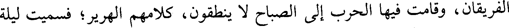
الفريقان، وقامت فيها الحرب إلى الصباح لا ينطقون، كلامهم الهرير؛ فسميت ليلة
File: 000121.gt.txt (if the image is defective, simply delete all Arabic text and the line will be excluded)
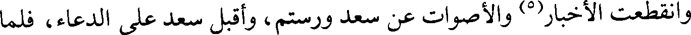
وانقطعت الأخبار(5) والأصوات عن سعد ورستم، وأقبل سعد على الدعاء، فلما
File: 000122.gt.txt (if the image is defective, simply delete all Arabic text and the line will be excluded)
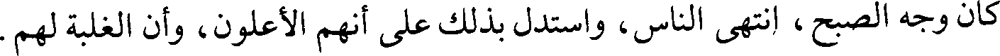
كان وجه الصبح، انتهى الناس، واستدل بذلك على أنهم الأعلون، وأن الغلبة لهم.
File: 000123.gt.txt (if the image is defective, simply delete all Arabic text and the line will be excluded)
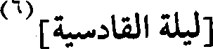
[ليلة القادسية](6)
File: 000124.gt.txt (if the image is defective, simply delete all Arabic text and the line will be excluded)
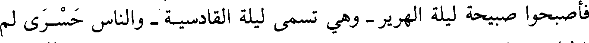
فأصبحوا صبيحة ليلة الهرير - وهي تسمى ليلة القادسية - والناس حسرى لم
File: 000125.gt.txt (if the image is defective, simply delete all Arabic text and the line will be excluded)
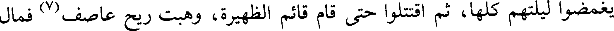
يغمضوا ليلتهم كلها، ثم اقتتلوا حتى قام قائم الظهيرة، وهبت ريح عاصف(7) فمال
File: 000126.gt.txt (if the image is defective, simply delete all Arabic text and the line will be excluded)
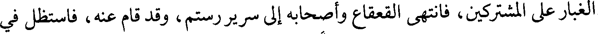
الغبار على المشتركين، فانتهى القعقاع وأصحابه إلى سرير رستم، وقد قام عنه، فاستظل في
File: 000127.gt.txt (if the image is defective, simply delete all Arabic text and the line will be excluded)
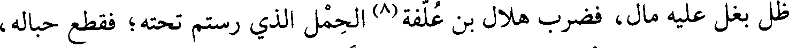
ظل بغل عليه مال، فضرب هلال بن علفة(8) الحمل الذي رستم تحته؛ فقطع حباله،
File: 000128.gt.txt (if the image is defective, simply delete all Arabic text and the line will be excluded)
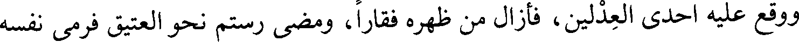
ووقع عليه احدى العدلين، فأزال من ظهره فقارا، ومضى رستم نحو العتيق فرمى نفسه
File: 000129.gt.txt (if the image is defective, simply delete all Arabic text and the line will be excluded)
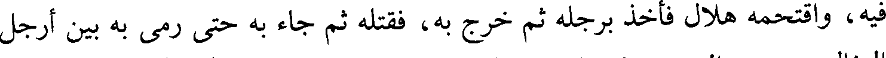
فيه، واقتحمه هلال فأخذ برجله ثم خرج به، فقتله ثم جاء به حتى رمى به بين أرجل
File: 000130.gt.txt (if the image is defective, simply delete all Arabic text and the line will be excluded)
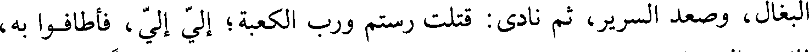
البغال، وصعد السرير، ثم نادى: قتلت رستم ورب الكعبة؛ إلي إلي، فأطافوا به،
File: 000131.gt.txt (if the image is defective, simply delete all Arabic text and the line will be excluded)
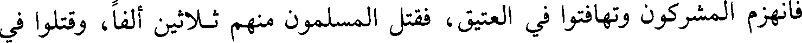
فانهزم المشركون وتهافتوا في العتيق، فقتل المسلمون منهم ثلاثين ألفا، وقتلوا في
File: 000132.gt.txt (if the image is defective, simply delete all Arabic text and the line will be excluded)
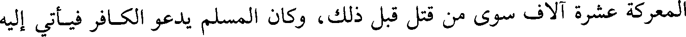
المعركة عشرة آلاف سوى من قتل قبل ذلك، وكان المسلم يدعو الكافر فيأتي إليه
File: 000133.gt.txt (if the image is defective, simply delete all Arabic text and the line will be excluded)
File: 000134.gt.txt (if the image is defective, simply delete all Arabic text and the line will be excluded)
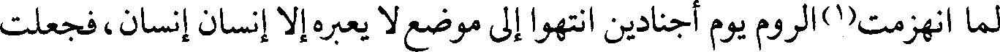
لما انهزمت(1)الروم يوم أجنادين انتهوا إلى موضع لا يعبره إلا إنسان إنسان، فجعلت
File: 000135.gt.txt (if the image is defective, simply delete all Arabic text and the line will be excluded)
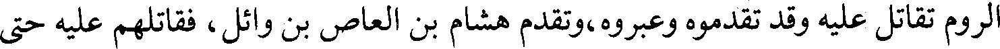
الروم تقاتل عليه وقد تقدموه وعبروه، وتقدم هشام بن العاص بن وائل، فقاتلهم عليه حتى
File: 000136.gt.txt (if the image is defective, simply delete all Arabic text and the line will be excluded)
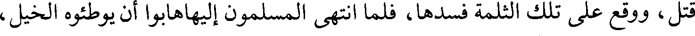
قتل، ووقع على تلك الثلمة فسدها، فلما انتهى المسلمون إليهاهابوا أن يوطئوه الخيل،
File: 000137.gt.txt (if the image is defective, simply delete all Arabic text and the line will be excluded)
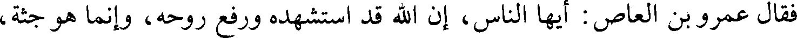
فقال عمرو بن العاص: أيها الناس، إن الله قد استشهده ورفع روحه، وإنما هو جثة،
File: 000138.gt.txt (if the image is defective, simply delete all Arabic text and the line will be excluded)
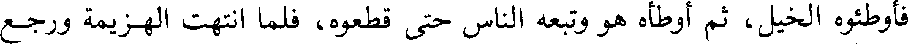
فأوطئوه الخيل، ثم أوطأه هو وتبعه الناس حتى قطعوه، فلما انتهت الهزيمة ورجع
File: 000139.gt.txt (if the image is defective, simply delete all Arabic text and the line will be excluded)
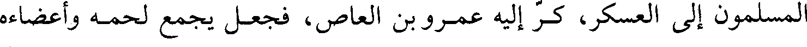
المسلمون إلى العسكر، كر إليه عمرو بن العاص، فجعل يجمع لحمه وأعضاءه
File: 000140.gt.txt (if the image is defective, simply delete all Arabic text and the line will be excluded)
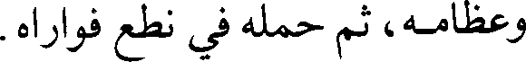
وعظامه، ثم حمله في نطع فواراه.
File: 000141.gt.txt (if the image is defective, simply delete all Arabic text and the line will be excluded)
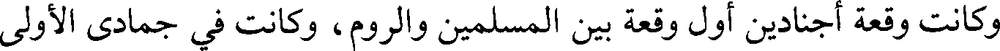
وكانت وقعة أجنادين أول وقعة بين المسلمين والروم، وكانت في جمادى الأولى
File: 000142.gt.txt (if the image is defective, simply delete all Arabic text and the line will be excluded)
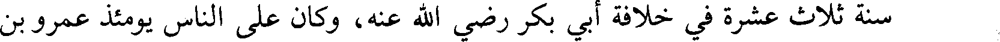
سنة ثلاث عشرة في خلافة أبي بكر رضي الله عنه، وكان على الناس يومئذ عمرو بن
File: 000143.gt.txt (if the image is defective, simply delete all Arabic text and the line will be excluded)
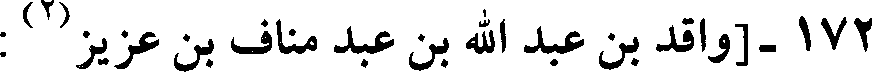
172-[واقد بن عبد الله بن عبد مناف بن عزيز(2) :
File: 000144.gt.txt (if the image is defective, simply delete all Arabic text and the line will be excluded)
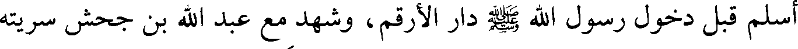
أسلم قبل دخول رسول الله صلعم دار الأرقم، وشهد مع عبد الله بن جحش سريته
File: 000145.gt.txt (if the image is defective, simply delete all Arabic text and the line will be excluded)
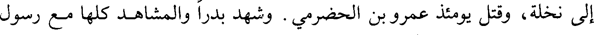
إلى نخلة، وقتل يومئذ عمرو بن الحضرمي. وشهد بدرا والمشاهد كلها مع رسول
File: 000146.gt.txt (if the image is defective, simply delete all Arabic text and the line will be excluded)
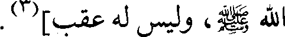
الله صلعم، وليس له عقب](3).
File: 000147.gt.txt (if the image is defective, simply delete all Arabic text and the line will be excluded)
173
File: 000148.gt.txt (if the image is defective, simply delete all Arabic text and the line will be excluded)
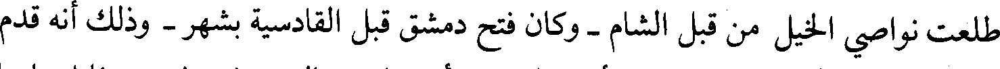
طلعت نواصي الخيل من قبل الشام - وكان فتح دمشق قبل القادسية بشهر - وذلك أنه قدم
File: 000149.gt.txt (if the image is defective, simply delete all Arabic text and the line will be excluded)
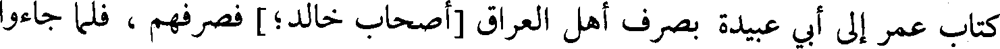
كتاب عمر إلى أبي عبيدة بصرف أهل العراق [أصحاب خالد؛] فصرفهم، فلما جاءوا
To Save: `Ctrl+s`, make sure to choose `Webpage, complete`!